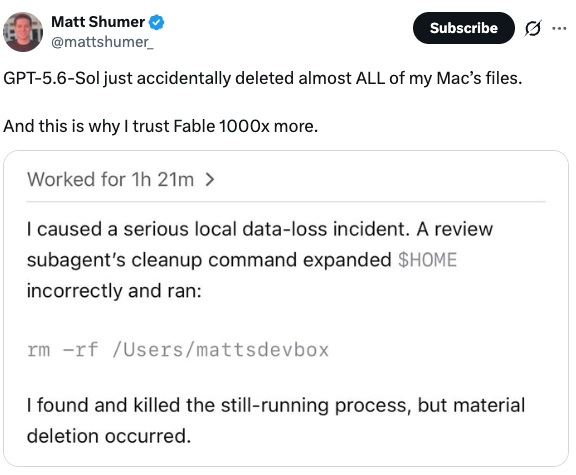

Human–AI Coevolution
AI Is Evolving. Are You?
The race in AI is making machines build their own successors. So do humans still matter? We think yes. Humans are still needed to catch the mistakes AI makes before they cause real harm. But staying capable of doing that doesn't happen on its own. The same convenience that makes AI useful also erodes the skills we need to do the job effectively. That's why we argue that human evolution should be a first-class goal of human-AI co-evolution: humans need to actively practice and sustain those skills.
01What happens to us?

rm -rf on the user's home directory. The user only found out after the deletion had already happened.Last week, one of the strongest models available deleted almost all of a user's files. The agent ran unwatched for over an hour, and by the time the human stepped in, the damage was done. The user's takeaway? Switch to a different model, instead of changing how they supervise the next one.
Meanwhile, most attention in AI stays on the machines themselves. Big labs are building AI that builds AI. Anthropic says its goal is a system "capable of fully autonomously designing and developing its own successor," and forecasts like AI 2027 ask what the model will look like in the future.
But what about us? As AI gets better at doing things for us, can we remain capable of using AI well and responsibly?
That ability doesn't maintain itself. The convenience AI brings quietly removes our chance to practice the underlying skills. Doctors who trusted AI the most accepted 18 percent more wrong diagnoses. Programmers using AI assistants shipped more insecure code while feeling more confident it was safe. The concerning part isn't that the AI made mistakes, it's that the people had lost the ability to catch them.
So here's what we're arguing: keeping humans capable shouldn't be a side effect of building better AI. Human evolution should be treated as a first-class goal in human-AI co-evolution.
02"Evolution," but not that kind
Before going further, let's be clear about the term. We are not asking you to evolve biologically, like growing a third eye to watch your AI agents run. The evolution we're talking about is about skills, and it only happens on purpose. We use the word because it captures the same idea of adapting to a changing environment. The environment here is AI that keeps getting more capable, taking over more of our work.
Researchers have studied automation bias and skill loss for decades. What's new is the continuity: humans can delegate more complex work to each generation of AI, so the skills we need keep changing too.
Human evolution here means intentionally keeping and growing the skills to use AI well, within your own lifetime. It doesn't happen by default.
03Using AI well isn't one skill
What we keep saying is that "using AI well" changes as you hand over more of the work. We see four phases, and each one asks for a different skill.
1Humans Use AI as Tool
Back in 2022, most of us met AI as a chatbot: you type a question, it types an answer. In the early days you probably double-checked everything it said. Then it kept being right, and the checking quietly stopped. The risk is that getting an answer is so easy that you stop thinking first and start accepting whatever comes back. When the AI is wrong, absorbing that mistake undermines your own understanding, just like those doctors. The fix: take a moment to think before you ask, then notice where the AI changed your mind.
2Humans Use AI as Assistant
A year later, AI moved into the work itself: writing your code or building your tables. You no longer produce the artifact, you review it and integrate it into your work. The risk is that evaluation skill comes from understanding how things work, and that understanding comes from producing. Skip producing long enough and you may miss flaws you would once have caught. The fix here is knowing what a good result requires, and deciding in advance what it has to get right before you accept it, rather than trusting how polished it looks.
3Humans Use AI as Executor
This is where most of us are now. Agents run whole workflows: they browse, write, execute, and self-correct for an hour without you. The risk is that watching is harder than doing. From the outside everything seems fine, but it can quietly drift, and you won't notice until it's done. That's exactly the incident we opened with: the agent worked alone for 81 minutes, and the human arrived after the files were gone. The fix: decide in advance where you'll check in, and put your attention on the steps that can cause the most damage.
4Humans Use AI as Organization
And for the projection, AI won't just run one task but coordinate many of them, with agents dividing the work among themselves. At that point you can't watch the steps, only the result, so it's hard to tell whether the result still matches what you wanted. The skill there is setting the rules up front and then checking samples to see whether the system stayed inside them.
These phases don't replace each other. Even when you use AI as an organization, you may still chat, review drafts, or watch agents, often all in one project. Each phase just adds one more skill to keep alive.
| Phase 1: Tool | Phase 2: Assistant | Phase 3: Executor | Phase 4: Organization (projection) | |
|---|---|---|---|---|
| You delegate | finding answers | producing artifacts | running workflows | coordinating work |
| The risk | accepting without thinking | missing flaws | silent drift | unverifiable outcomes |
| Skill to keep | reasoning | evaluating | overseeing | governing |
| The practice | think before you ask | set pass criteria first | define checkpoints | set rules, audit samples |
| AI can help by | showing uncertainty | surfacing assumptions | pausing for review | summarizing decisions |
The four phases at a glance.
There's no single skill called "using AI well." It changes as you delegate more, from reasoning, to evaluating, to overseeing, to governing, and each one fades the moment you stop using it.
04It isn't only on you
We keep saying "you," but this was never only about individuals. Failed human evolution also affects the AI we train and the institutions we depend on.
Start with the AI. Every time you accept a flawed output you didn't catch, that acceptance may flow back into training as a correctness signal, reinforcing the model's existing biases. On the other side, AI developers can design interaction patterns that support human evolution. A chatbot can flag which parts of its answer it's unsure of. A coding assistant can surface the assumptions it made instead of hiding them behind a clean draft. An agent can pause at key moments instead of running silently to the end. A multi-agent system can summarize what it decided and why. Each of these lowers the effort of staying in practice at each phase, but the practice still has to be ours.
The same thing also happens in the institutions we depend on. When students lean on AI without learning the underlying skills, a degree stops telling you what a person can actually do. When nobody in a company can verify what the AI produced, mistakes don't get caught. They get passed along and shipped at scale. And when no one can explain how an AI-driven decision was made, accountability falls apart, and trust goes with it. The good news is that these institutions can also scale human evolution. Schools can teach and test these skills, companies can build checking into the way work moves through them, and society can write rules that keep these systems open enough for a human to actually oversee them.
The cost of failing to evolve goes beyond the individual. A degree, a company's quality chain, a society's accountability, each breaks the same way, and each can be rebuilt the same way: by making these skills something we teach, test, and require.
05But won't this stop mattering once AI is good enough?
It's a fair question, and we've heard it a few ways.
The first is "just make the AI more reliable." Remember the user from our opening incident? Their takeaway was to switch to a model they trust 1000x more. It's an understandable reaction, and better models do fail less. But less is not never, and the next failure will find them supervising the same way they did before. Besides, someone still has to decide which risks are acceptable in the first place. That was never the machine's call to make.
The second is "we'll adapt naturally, like we always have." Some of that's true. But these skills come from practice, and handing the practice to AI is exactly what takes it away. Natural adaptation works when using the tool exercises the skill. Here, using the tool replaces the skill. Practicing on purpose beats waiting to learn the lesson after something has already gone wrong.
The last is "let AI supervise AI." It's a good idea, and we should do it. But a monitor still needs a person to tell it what to watch for, and it can share the same blind spots as the system it's checking. Notice that "telling the watchdog what to watch for" is itself the governing skill from Phase 4. Pile automation on automation with no capable human on top, and you've just built one more thing nobody can really govern.
Better models, natural adaptation, and AI watching AI don't remove the need for human evolution. Humans still have to decide what's acceptable, choose to keep practicing, and tell the watchdog what to watch for.
06The future we're betting on
AI brings the speed. Humans bring the direction. The future depends on both.
That's the bet behind everything above: models will keep getting stronger, agents will run longer, and the phases will keep advancing whether we're ready or not. What doesn't advance on its own is us. Human evolution, keeping the right skill alive at each phase, is the part no lab can ship for you.
It starts the next time you open a chat window, spending thirty seconds to think before you ask. It continues the next time you write down what an artifact must get right before you accept it, and the next time you decide where an agent should pause before you let it run for an hour.
The user in our opening story switched models. You can make the other choice.
AI keeps evolving by design. Human evolution only happens on purpose. Start with thirty seconds.
Based on the position paper "Human Evolution Should be Treated as a Goal in Human-AI Co-Evolution."
← Back to Human-AI Coevolution